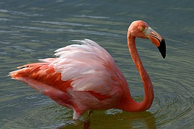

American Flamingo
Uploaded on 10-10-2020
Written By Aidan Nannini

Sometimes called the Carribean Flamingo. The American flamingo is the only species of flamingo that is native to North America. They are omnivorous and consume shrimp, insects, mollusks, and algae. Flamingos are Actually born with white feathers, and gain their pinkish hue from the shrimp and algae they eat, which are rich in beta carotene. Flamingos often stand on one leg but the reason for this behavior is unknown.